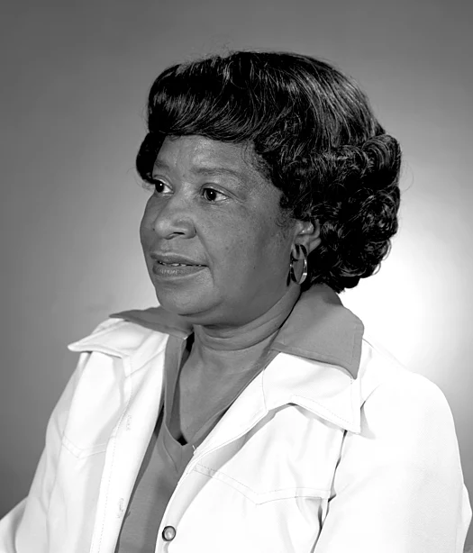

Susanna Lee Hoffs (born 1959) is an American singer-songwriter. With Debbi Peterson and Vicki Peterson, she founded the Bangles in 1981. Their second album, Different Light (1986), was warmly received by critics and was certified triple-platinum in 1994. The group's third album, Everything (1988), included the US-top-ten-charting "In Your Room" and number-one "Eternal Flame", both
written by Hoffs with Billy Steinberg and Tom Kelly. Following tensions including resentment at Hoffs's perceived leadership of the band and the stress of touring, the band split in 1989, reforming in 1999. Hoffs's first solo album, When You're a Boy (1991), was followed by Susanna Hoffs (1996). Neither of the releases proved to be as popular as the Bangles's albums, although they yielded two US-charting singles. Her most recent solo album is The Deep End (2023), and her first novel, This Bird Has Flown, a romantic comedy about a struggling musician, was published in the same year.
Did you know ...
...that Light Vessel 95(pictured)is now a recoding studio
... that Soviet academic Lily Golden researched "officially disapproved" genres of contemporary Black music?
... that the opening scene of Yen and Ai-Lee was rewritten as a long take due to rain during filming?
Today's featured picture

Mary Jackson (1921–2005) was an American mathematician and aerospace engineer at the National Advisory Committee for Aeronautics and its successor, NASA. She worked at Langley Research Center in Hampton, Virginia, for most of her career. She started as a computer at the segregated West Area Computing division in 1951. In 1958, after taking engineering classes, she became NASA's first black female engineer. Jackson had earned the most senior engineering title available by 1979 and realized she could not earn further promotions without becoming a supervisor. She accepted a demotion to become a manager of both NASA's federal women's program and the affirmative action program. Her work sought to influence the career paths of women in science, engineering, and mathematics positions at NASA. Jackson is one of the leading characters in the 2016 book Hidden Figures and one of the three protagonists in the book's film adaptation, released the same year. This NASA photograph of Jackson was taken in 1979.